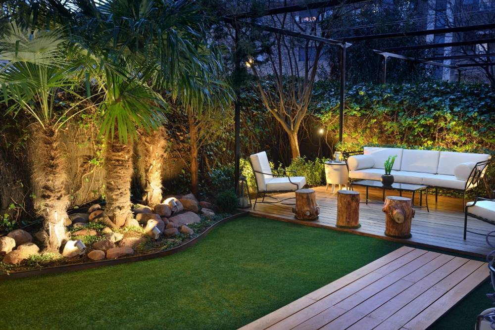

Las plantas expulsan dióxido de carbono por la noche, pero el resto del día aportan oxígeno fresco. Además, absorben gases contaminantes, mejoran y purifican el aire y consiguen que el ambiente tenga un poco más de humedad. En el caso de tenerlas en el balcón, la terraza o el jardín, pasar un rato con ellas a la luz del sol aumenta los niveles de endorfinas, lo que produce a su vez, un efecto muy positivo en nuestro estado de ánimo. Las plantas, por tanto, aportan felicidad.
Podemos cuidarlas en soledad pero también compartir esta afición con amigos - con los que intercambiar semillas o esquejes, pedir consejo, enseñar a trasplantar...- o con miembros de nuestra familia a los que podemos enseñar y de los que también podemos aprender.
Tener una planta, al igual que cuando se tiene una mascota, requiere que adquiramos una serie de responsabilidades para con ella. En el caso de los niños, además, puede servir como aliciente para enseñar el respeto a la naturaleza o clases de biología con las que aprenderán las distintas fases por las que pasan los seres vivos.